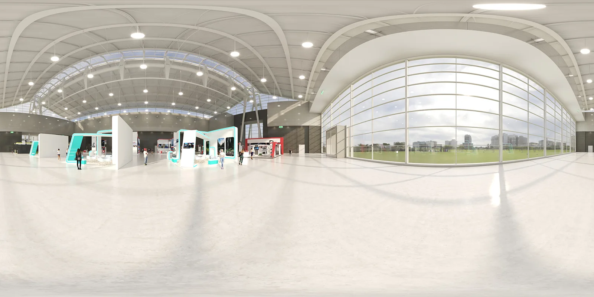
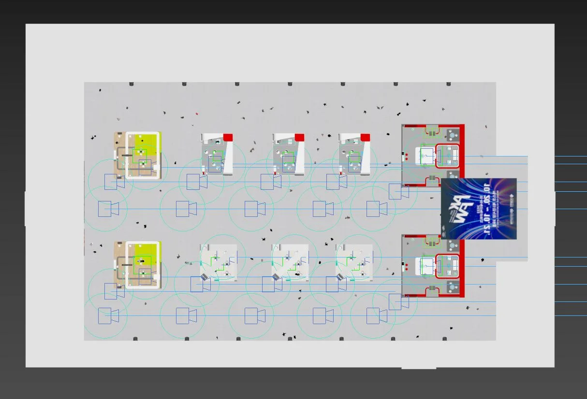
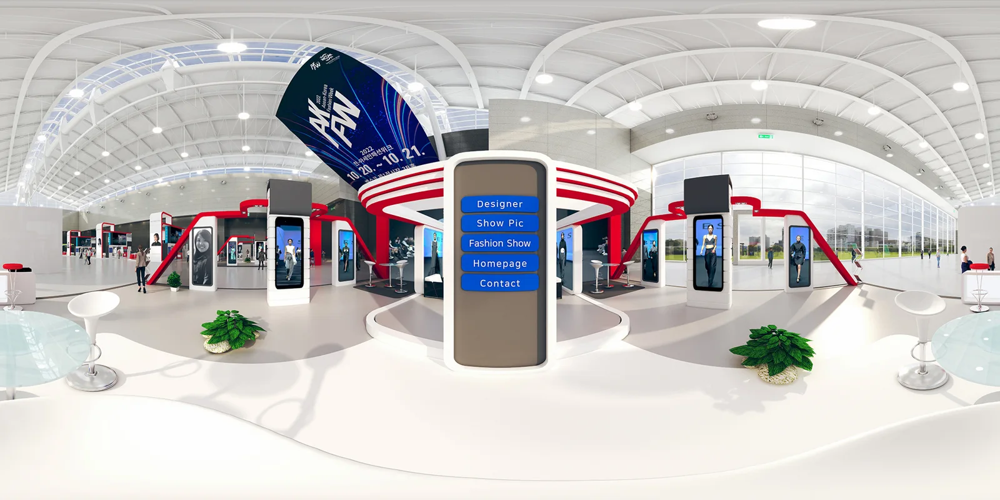
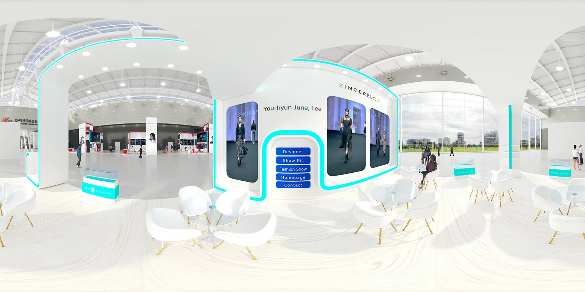
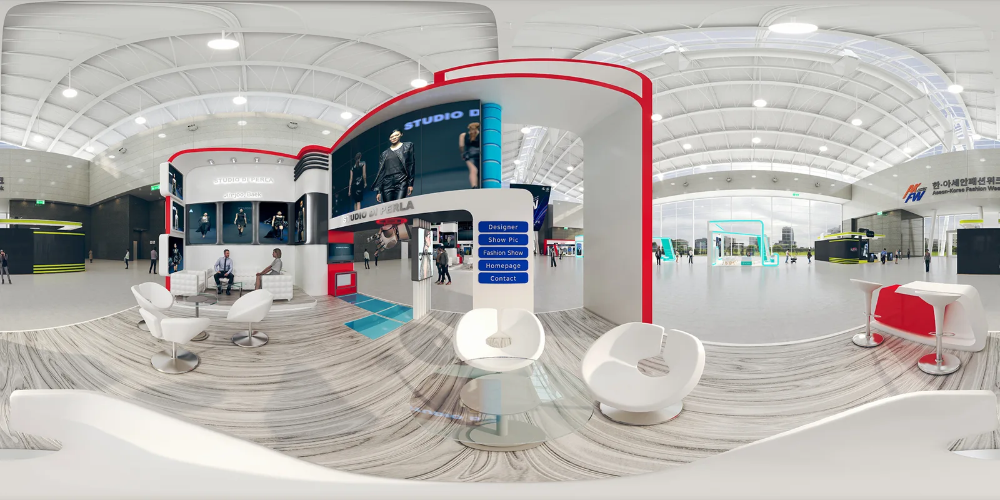
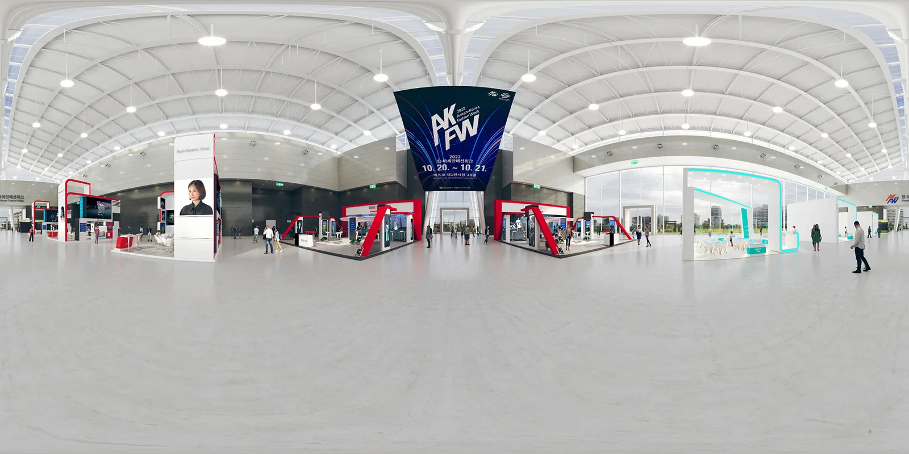
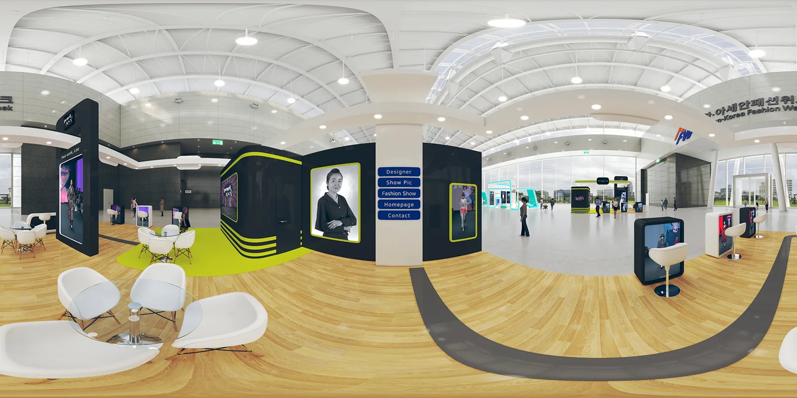

코로나 감염병을 지나 전시 업계는 큰 변화를 맞이하였습니다.
그 대표적인 예로 VR을 이용한 디지털 전시회를 동시에 진행하는 경우가 많아졌으며 그에 따라 3D 공간 구축 및 제작이 필요해졌습니다.
해당 프로젝트는 모 회사에서 3D 데이터 구축 및 VR 이미지 렌더링 납품 부분을 하청 받아 진행하였으며, 전시 오픈 일정에 맞추어 납품이 필요한 프로젝트였습니다.
실제 전시명은 2022 한·아세안패션위크 VR 전시회 이며 한·아세안패션위크는 매년 꾸준히 진행되는 패션쇼 중 하나입니다.
프로젝트의 진행과정

각 전시 부스 및 전시 공간 데이터는 보내주신 데이터를 기초하여 사람과 렌더링 구성만 진행하였으며, 빠른 시간 내에 많은 양의 사실적인 공간 렌더링을 납품 하는 것이 중요한 프로젝트였습니다.
해상도 14000x7000 px 2:1비율 총 30장의 렌더링 이미지를 납품하였습니다.
결과물
카메라 포인트






마치며
메이크그룹은 다양한 3d 모델 데이터 구축 및 360도 VR 렌더링이 가능하니 편안하게 문의해주시면 감사하겠습니다.
이상 메이크 그룹이였습니다. 감사합니다.
홈페이지
https://www.makegroup.co.kr/
블로그
https://blog.naver.com/makegroupcg